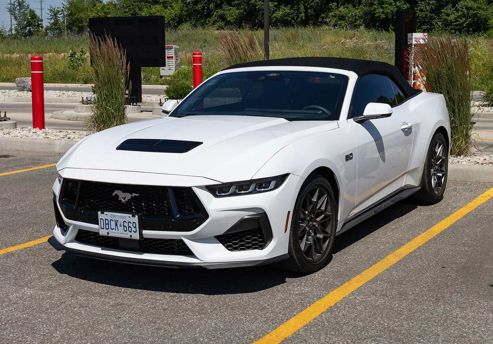

Η σημερινή γενιά: S650
Η έβδομη γενιά του Mustang παρουσιάστηκε το 2023 και βγήκε στην αγορά το 2024. Διατηρεί τον ατμοσφαιρικό V8 των 5.0 λίτρων, ο οποίος αποδίδει 480 ίππους στην έκδοση GT και 500 στην κορυφαία Dark Horse. Παράλληλα προσφέρεται και ο τετρακύλινδρος turbo EcoBoost των 2.3 λίτρων.
Το εσωτερικό εκσυγχρονίστηκε με δύο μεγάλες ψηφιακές οθόνες, ενώ η σχεδίαση κρατά τις κλασικές αναλογίες του μοντέλου. Είναι η πρώτη γενιά που σχεδιάστηκε εξ αρχής με στόχο να πουληθεί σε παγκόσμιο επίπεδο.

Οι εκδόσεις με μια ματιά
- EcoBoost: 2.3 λίτρα turbo, 315 hp, η προσιτή έκδοση.
- GT: V8 5.0 λίτρων, 480 hp, η κλασική επιλογή.
- Dark Horse: βελτιωμένο πλαίσιο και 500 hp, για πίστα.
- Shelby GT500: V8 5.2 λίτρων με κομπρέσορα, 760 hp.